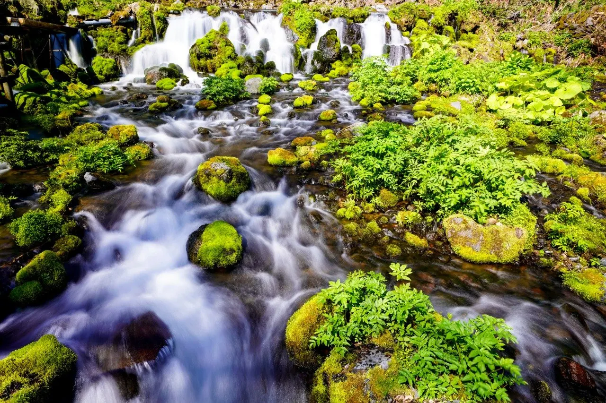
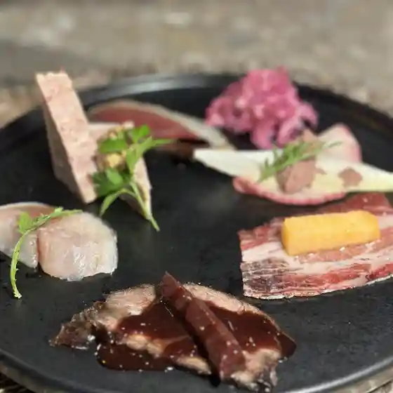
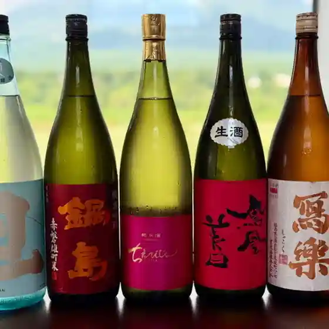
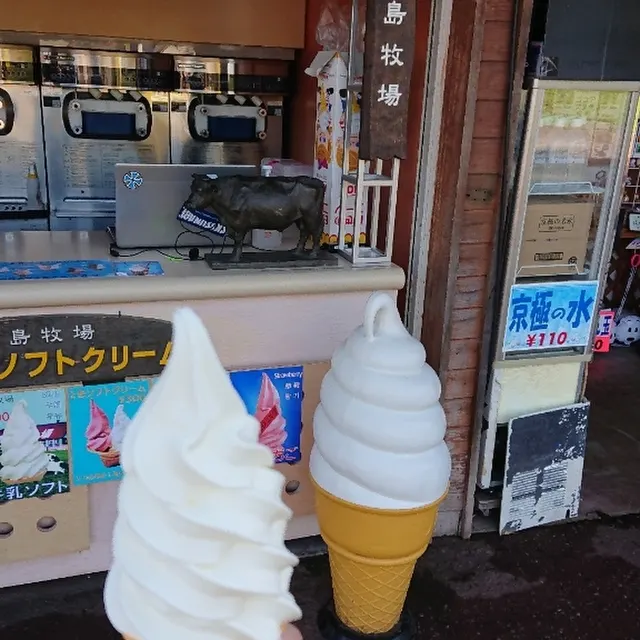
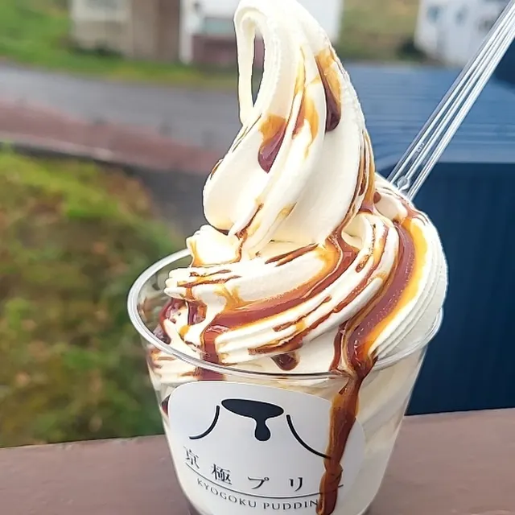
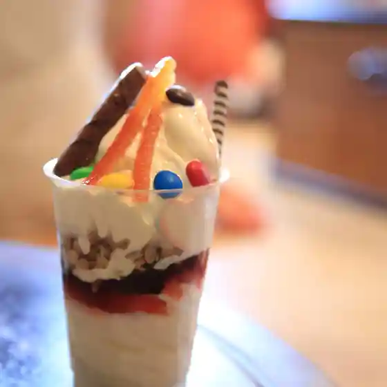
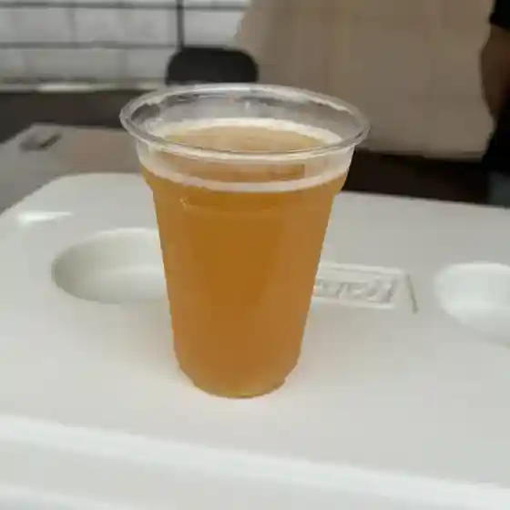
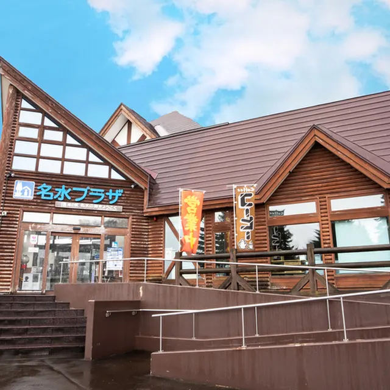

Kyogoku
Kyogoku · Hokkaido
Kyogoku
Highlighted on the Hokkaido map.

Stay
Dining
le ｍantaro

Le M Antaro
肉の万次郎

Niku No Manjirou
倉島牧場ソフトクリーム

Kurashima Bokujou Sofutokuriimu
パン工房 よしかわ

Pan Koubou Yoshikawa
カフェモカファクトリー

Kafemokafakutorii
名水うどん 野々傘

Meisui Udon Nono Kasa
京極麦酒

Kyougoku Biiru
道の駅名水の郷きょうごく 名水プラザ レストラン

Michi No Ekimei Mizu No Sato Kyougoku Meisui Puraza Resutoran
紅寿司
Kurenai Sushi
京極銘水 甘味処 江守
Kyougoku Mei Mizu Amami Tokoro Emori
ひさし
Hisashi
道の駅 名水の郷きょうごく
Michi No Eki Meisui No Sato Kyougoku
宮嶋商店
Miyajima Shouten
ささや食堂
Sasaya Shokudou
焼肉・居酒屋 鍋処
Yakiniku Izakaya Nabe Tokoro
わかさや本舗工場
Wakasaya Honpo Koujou
セイコーマート 京極店
Seikoomaato Kyougoku Mise
たこ八食堂
Tako Hasshoku Dou
kokohana
Kokohana
川上温泉
Kawakami Onsen
噴出しガーデン
Funshutsu Shi Gaaden
SOUP CURRY LOOP
Soup Curry Loop
赤井川村山中牧場ソフトクリーム
Akaigawa Murayama Nakamaki Ba Sofutokuriimu
自家焙煎珈琲かふぇもか店
Jika Baisen Koohii Kafemoka Mise
Sights
Fukidashi Park
Fukidashi Park